次单位根”的研究非常有趣，而且涉及了几个不同的数学领域，包括古典几何和数论。只有当数学家们能自如地处理复数时，这项研究才有可能得以开展，也就是说，这项研究直到 18 世纪中叶才真正开始。1751 年，伟大的瑞士数学家莱昂哈德·欧拉（1707—1783）在一篇题为《论开方和无理数》（“On the Extraction of Roots and Irrational Quantities”）的论文中开创了这项研究。
次单位根”的研究非常有趣，而且涉及了几个不同的数学领域，包括古典几何和数论。只有当数学家们能自如地处理复数时，这项研究才有可能得以开展，也就是说，这项研究直到 18 世纪中叶才真正开始。1751 年，伟大的瑞士数学家莱昂哈德·欧拉（1707—1783）在一篇题为《论开方和无理数》（“On the Extraction of Roots and Irrational Quantities”）的论文中开创了这项研究。在介绍求解一般三次方程时，我提到了 1 的立方根。1 有 3 个立方根，因为 1×1×1 - 1，所以 1 本身是 1 的立方根。1 的另外两个立方根是
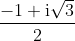
和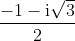
这两个立方根通常分别被称为 和
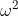
。请你记住 ，因此这两个数的立方都是 1。此外，第二个数是第一个数的平方，第一个数也是第二个数的平方。显然， 是 的平方；通过简单计算可知， 也是 的平方——因为 的平方是
，因此这两个数的立方都是 1。此外，第二个数是第一个数的平方，第一个数也是第二个数的平方。显然， 是 的平方；通过简单计算可知， 也是 的平方——因为 的平方是 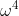
，而 ，根据定义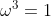
，所以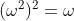
。※※※
关于通常被我们称为“ 次单位根”的研究非常有趣，而且涉及了几个不同的数学领域，包括古典几何和数论。只有当数学家们能自如地处理复数时，这项研究才有可能得以开展，也就是说，这项研究直到 18 世纪中叶才真正开始。1751 年，伟大的瑞士数学家莱昂哈德·欧拉（1707—1783）在一篇题为《论开方和无理数》（“On the Extraction of Roots and Irrational Quantities”）的论文中开创了这项研究。
显然，1 的平方根是 1 和 -1。1 的立方根是 1 和前面给出的两个数 和 。1 的四次方根是 1、-1、i、-i，这几个数的四次方都是 1。欧拉给出了 1 的五次方根：
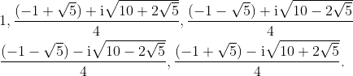
用数值表示这些数，分别是 1、0.309 017+0.951 057i、-0.809 017+0.587 785i、-0.809 017 -0.587 785i 和 0.309 017 -0.951 057i。在复平面内标出这些数如图 RU-1 所示，实数部分是横坐标，虚数部分是纵坐标。
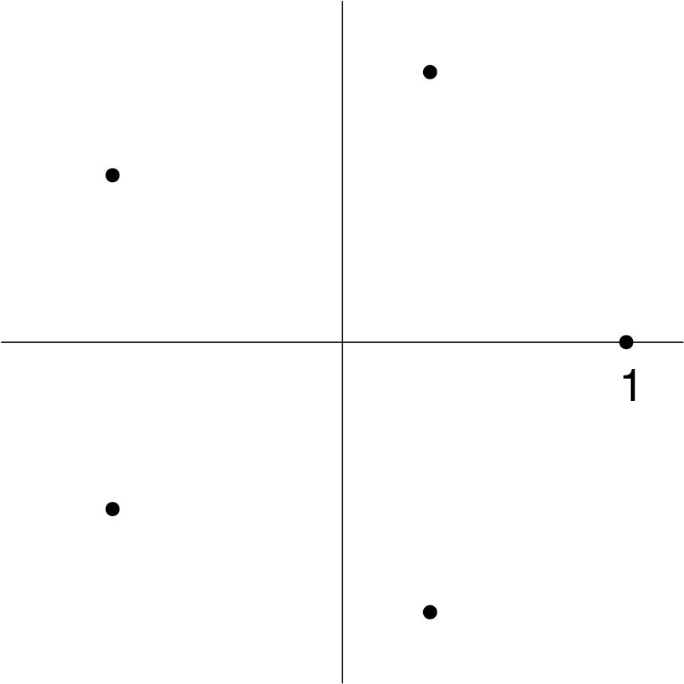
图 RU-1 五次单位根
事实上，它们是以原点为中心的正五边形的五个顶点。换句话说，它们位于半径为 1 的单位圆上，并且把圆周五等分。表示“分割一个圆”的英文术语是“cyclotomic”，这个词源自希腊文。这些复数，或者说复平面上的这些点被称为分圆点（cyclotomic points）1。
1西尔维斯特似乎在 1879 年首次使用“分圆”一词表示这里的含义。
※※※
这些数都是从哪里来的？我们如何知道 1 的复立方根是上面给出的 和 呢？实际上，我们是通过解方程知道的。
如果  是 1 的立方根，那么当然有
是 1 的立方根，那么当然有
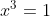
，即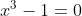
，而这恰好是一个可以求解的三次方程。事实上，因为我们知道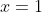
一定是 3 个解之一，所以我们立即就能将这个方程分解为这样的形式：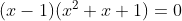
所以，为了得到另外两个根，我们只需要求解二次方程
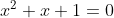
。根据二次方程求根公式可知，这个方程的解就是 和 。事实上，解为 次单位根的方程
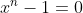
也可以被分解成如下形式：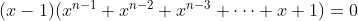
而且除了 1 本身之外的其他 次单位根都可以通过解下面这个方程得到：
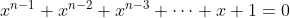
18 世纪和 19 世纪的很多数学家求解这个一般的 次方程。1801 年，卡尔·弗里德里希·高斯（1777—1855）在经典著作《算术研究》中用了整整一章的篇幅研究这个方程，英文译本中的这一章有 54 页。我们有时把这个方程称为 次分圆方程，但大多数现代数学家所说的“分圆方程”有更严格的含义。
※※※
高斯的至高荣誉是证明了正十七边形可以用经典方式构造出来，即可以用尺规作图。
用前面的术语表述就是，当且仅当在复平面内可构成正多边形的顶点的分圆点可以用整数和平方根符号表示时，这个正多边形才可以用尺规作出来。我在前文中给出的当
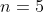
时的五次单位根就属于这种情况，所以正五边形可以用尺规作图。高斯证明了正十七边形也是如此。事实上，他写出了十七次单位根的实数部分：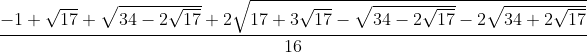
虽然嵌套了三层根号，但这里面只有整数和平方根，因此正十七边形可以用尺规作图。这是青年高斯的第一个伟大的数学成就。这个成就太了不起了，在他的出生地德国不伦瑞克的墓碑上就刻有一个正十七边形。
高斯证明，对于形如
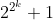
的素数（不能错误地说成这种形式的任意数）也是如此。当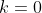
、1、2、3 和 4 时，我们分别得到 3、5、17、257 和 65 537，这些数全是素数。然而，当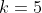
时，我们得到 4 294 967 297，“正如伟大的欧拉首先指出的那样”（我引用了高斯的原话），这个数不是素数。※※※
单位根有很多有趣的性质，它不仅与古典几何有关，而且还与研究素数、因数和余数的数论有着密切的联系。
我们一起来看看六次单位根。它们是 1、
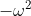
、、- 1、、，其中 和 是我们熟悉的 1 的立方根（我希望到目前为止大家应该很熟悉它们了）。如果你依次取这六个根，然后求出它的一次、二次、三次、四次、五次和六次幂，结果就如下表所示。这些根位于表头标有 的最左列，每个根的各次幂排在一行。（任何数的一次幂都是这个数本身。六次单位根的六次幂当然是 1。）
的最左列，每个根的各次幂排在一行。（任何数的一次幂都是这个数本身。六次单位根的六次幂当然是 1。）
|
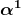 |
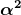 |
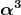 |
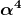 |
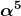 |
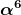 |
|---|---|---|---|---|---|---|
1 |
1 |
1 |
1 |
1 |
1 |
1 |
- |
-1 |
1 |
||||
1 |
1 |
|||||
-1 |
-1 |
1 |
-1 |
1 |
-1 |
1 |
1 |
1 |
|||||
-1 |
1 |
在这个过程中，六个根中只有两个根 和 能够生成所有这六个根。其他根只能生成这六个根组成的集合的某个子集。这与直觉是一致的，因为 和 只是六次单位根，而其他根还是 1 的平方根（此时为 -1）或 1 的立方根（此时为 和 ）。
在
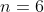
时，像 和 这样的 次单位根的各次幂可以生成所有的 次单位根，这些根称为 次本原单位根 2。“第一个” 次单位根（从复平面内单位圆上的 1 之后沿逆时针方向数起）总是本原单位根。下一个 次本原单位根是第  个，其中 与 互素（即 与 的最大公因子是 1）。例如，九次本原单位根是第一个、第二个、第四个、第五个、第七个和第八个九次单位根。如果 是一个素数，那么除了 1 之外，所有 次单位根都是 次本原单位根。正如我之前说过的，现在我们来到了研究素数和因数的数论领域。
个，其中 与 互素（即 与 的最大公因子是 1）。例如，九次本原单位根是第一个、第二个、第四个、第五个、第七个和第八个九次单位根。如果 是一个素数，那么除了 1 之外，所有 次单位根都是 次本原单位根。正如我之前说过的，现在我们来到了研究素数和因数的数论领域。
2不要把“ 次本原单位根”与数论中的术语“素数的原根”混淆。如果
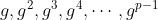
除以 之后，余数是
之后，余数是 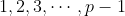
的某个排列，那么数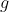
是一个素数 的原根。例如，8 是 11 的原根。如果取 8 的从 1 到 10 次幂，会得到 8、64、512、4096、32 768、262 144、2 097 152、16 777 216、134 217 728 和 1 073 741 824。这些数除以 11 的余数分别是 8、9、6、4、10、3、2、5、7 和 1。所以 8 是 11 的原根。另外，3 不是 11 的原根：3 的前 10 次幂是 3、9、27、81、243、729、2187、6561、19 683 和 59 049。这些数除以 11 的余数分别是 3、9、5、4、1、3、9、5、4、1。所以 3 不是 11 的原根。事实上，原根的概念与我正文中讲的这个概念有关，但并不相同。因为 11 是一个素数，每一个 11 次单位根都是 11 次本原单位根，但在数论的意义下，11 的原根只有 2、6、7、8。 次本原单位根的方程。所以在 时，分圆方程是 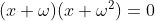
，解是 和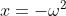
。这个方程展开后是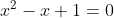
。